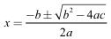

数海拾贝(1)
在数学里，方程表示含有未知数的等式“方程”这个中文名称最早出现在著名的数学专著《九章算术》里，它大约在东汉成书。其中第八卷的卷名就是“方程”。那里面的第一个数学问题是：有上等黍三捆，中等黍两捆，下等黍一捆，共出黄米三十九斗。又有上等黍两捆，中等黍三捆，下等黍一捆，出米三十四斗，再有上等黍一捆，中等黍两捆，下等黍三捆，出米二十六斗。问上等、中等、下等黍每捆各出多少斗黄米？
把这个问题翻译成现代代数语言，是个三元一次方程组：
3x+2y+z=39
2x+3y+z=34
x+2y+3z=26
这里x、y、z 分别是上等、中等、下等黍的每捆出米斗数。它们是要求出的量，称为未知数，这个方程组里一共有三个未知数，所以称为“三元”。“元”应该是“天元”的简称，也就是未知数。这个词是13世纪金国的数学家李冶发明的。
魏晋时期的数学家刘徽（约公元225—公元 295）为《九章算术》作注时是这么定义“方程”的：“程，课程也。群物总杂，各列有数，总言其实，令每行为率。二物者再程，三物者三程，皆如物数程之，并列为行，故谓之方程。”这话需要简单翻译一下。“课程”不是我们今天上课的课程，而是指按不同物品的数量关系列出的等式。“实”是式中的常数项（比如上面方程中的 39、34、26 等）。“令每行为率”，就是根据一个条件列一行等式。“如物数程之”，就是有几个未知数就必须列出几个等式。所以“二物者再程，三物者三程”。“方”的本意是并排。把两条船并起來，船栓拴在一起，在古语里就叫作方。所以列出的一系列等式叫作“方程”。而如今，我们赋予刘徽古老的“方程”这个词新的含义。
现在让我们看看多项方程式：
anxn+an-1xn-1+...+a1x1+a0=0。这里，a1，a2，...，an 都是已知数，而且 an ≠ 0。这个方程含有一个未知数x，所以是一元方程；的幂次最高为n，所以称为一元 n 次方程。所有满足这个方程的 x 的值叫作方程的“根”，或者方程的“解”。如果所有的根都能用一个公式来表达，那么这个公式就是该方程的通解。比如一元二次方程ax2+bx + c = 0（ a ≠ 0）的通解是

。